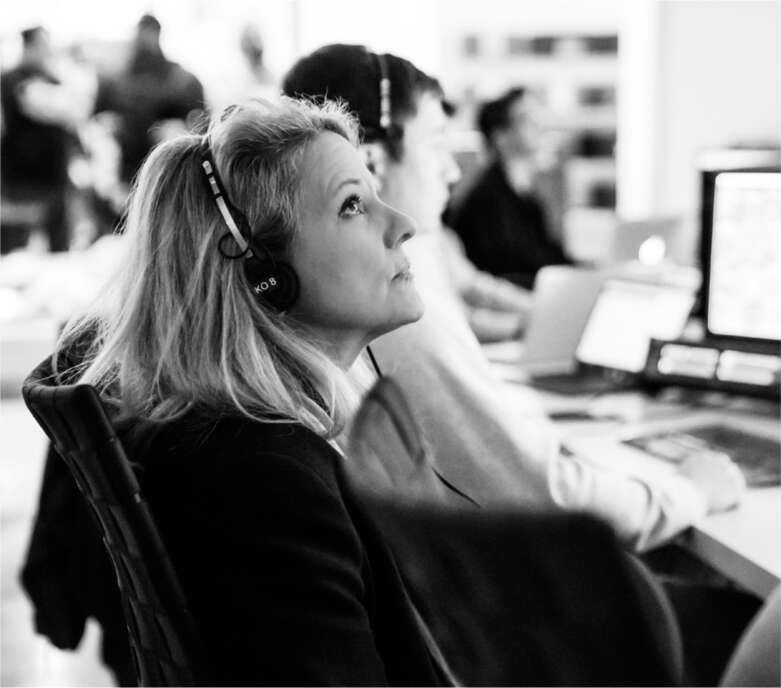

Gwynne Shotwell

.Musk không có xu hướng hợp tác với mọi người, cả về mặt cá nhân lẫn công việc. Tại Zip2 và PayPal, ông đã cho thấy mình có thể truyền cảm hứng, khiến đồng nghiệp sợ hãi và đôi khi là bắt nạt họ. Nhưng tính hợp tác không phải là một phần trong bộ kỹ năng của ông và sự tôn trọng không nằm trong bản chất của ông. Ông không thích chia sẻ quyền lực.
Một trong số ít ngoại lệ là mối quan hệ của ông với Gwynne Shotwell, người đã gia nhập SpaceX vào năm 2002 và cuối cùng trở thành chủ tịch của công ty. Cô đã làm việc với Musk, ngồi trong một phòng làm việc nhỏ ngay cạnh ông tại trụ sở SpaceX ở Los Angeles, trong hơn hai mươi năm, lâu hơn bất kỳ ai khác.
Thẳng thắn, nói năng dứt khoát và táo bạo, bà tự hào về việc mình "nói nhiều" nhưng không vượt quá giới hạn thiếu tôn trọng, và bà sở hữu sự tự tin thoải mái của một cựu cầu thủ bóng rổ và đội trưởng đội cổ vũ thời trung học. Sự quyết đoán nhẹ nhàng cho phép bà nói chuyện thẳng thắn với Musk mà không khiến ông phật lòng, và phản bác lại những thái quá của ông mà không cần phải quá chiều chuộng. Bà có thể đối xử với ông gần như một người đồng cấp nhưng vẫn thể hiện sự tôn kính, không bao giờ quên rằng ông là người sáng lập và là sếp.
Sinh ra với tên Gwynne Rowley, bà lớn lên tại một ngôi làng ngoại ô phía bắc Chicago. Khi đang học năm hai trung học, bà cùng mẹ tham dự một buổi hội thảo của Hội Nữ Kỹ sư, nơi bà bị cuốn hút bởi một nữ kỹ sư cơ khí ăn mặc lịch sự, sở hữu công ty xây dựng riêng. "Tôi muốn được như bà ấy", bà nói, và quyết định nộp đơn vào trường kỹ thuật tại Đại học Northwestern gần đó. "Tôi nộp đơn vì sự đa dạng trong các lĩnh vực khác của Northwestern", bà sau này chia sẻ với sinh viên ở đó. "Tôi đã rất sợ bị gán mác mọt sách. Giờ tôi rất tự hào về điều đó."
Năm 1986, trên đường đến buổi phỏng vấn xin việc tại văn phòng IBM khu vực Chicago, bà dừng lại xem tivi tại cửa hàng trưng bày cảnh phóng tàu con thoi Challenger với nữ giáo viên Christa McAuliffe trên khoang. Khoảnh khắc đáng lẽ truyền cảm hứng đã biến thành kinh hoàng khi
Challenger phát nổ một phút sau khi cất cánh. Shotwell bị chấn động đến mức không đạt được công việc đó. "Chắc chắn buổi phỏng vấn của tôi đã rất tệ." Cuối cùng, bà được Chrysler ở Detroit tuyển dụng, sau đó chuyển đến California, nơi bà trở thành trưởng bộ phận bán hàng hệ thống không gian cho Microcosm Inc., một công ty tư vấn khởi nghiệp cùng khu vực với SpaceX.
Tại Microcosm, bà làm việc với một kỹ sư người Đức gan dạ, mạnh mẽ tên là Hans Koenigsmann, người đã gặp Musk tại một trong những buổi tụ họp cuối tuần của những người có sở thích phóng tên lửa ở sa mạc Mojave. Musk sau đó đã đến nhà Koenigsmann để mời anh về làm việc, và vào tháng 5 năm 2002, anh trở thành nhân viên thứ tư của SpaceX.
Để chúc mừng, Shotwell đưa Koenigsmann đến nhà hàng yêu thích của họ, một nhà hàng Áo màu vàng tươi có tên Chef Hannes. Sau đó, bà lái xe đưa Koenigsmann xuống phố vài dãy nhà để đến SpaceX. "Vào đây đi", anh nói với bà. "Cô có thể gặp Elon."
Bà thấy ấn tượng với ý tưởng của Musk về việc giảm chi phí tên lửa và tự sản xuất các bộ phận. "Ông ấy nắm rõ chi tiết", bà nói. Nhưng bà cho rằng nhóm nghiên cứu không biết cách bán dịch vụ của họ. "Người mà ông đang giao nhiệm vụ thảo luận với khách hàng tiềm năng thật kém cỏi", bà thẳng thừng nói với ông.
Ngày hôm sau, bà nhận được cuộc gọi từ trợ lý của Musk, nói rằng ông muốn nói chuyện với bà về việc trở thành phó chủ tịch phát triển kinh doanh. Shotwell có hai con, đang ly hôn và sắp bước sang tuổi bốn mươi. Ý tưởng tham gia một công ty khởi nghiệp đầy rủi ro do một triệu phú thất thường điều hành không mấy hấp dẫn. Bà dành ba tuần suy nghĩ trước khi kết luận rằng SpaceX có tiềm năng biến đổi ngành công nghiệp tên lửa trì trệ thành một thứ gì đó đổi mới. "Tôi đúng là một kẻ ngốc", bà nói với ông. "Tôi sẽ nhận công việc." Bà trở thành nhân viên thứ bảy của công ty.
Shotwell có một cái nhìn sâu sắc đặc biệt giúp bà khi làm việc với Musk. Chồng bà mắc chứng rối loạn phổ tự kỷ thường được gọi là Asperger. "Những người như Elon mắc chứng Asperger không nắm bắt được các tín
hiệu xã hội và không tự nhiên nghĩ về tác động của những gì họ nói đối với người khác", bà nói. "Elon hiểu rất rõ về tính cách, nhưng như một nghiên cứu, chứ không phải là một cảm xúc."
Hội chứng Asperger có thể khiến một người trông như thiếu sự đồng cảm. "Elon không phải kẻ xấu, nhưng đôi khi anh ấy nói những điều rất khó nghe", bà chia sẻ. "Anh ấy chỉ không nghĩ đến tác động cá nhân của những gì mình nói. Anh ấy chỉ muốn hoàn thành nhiệm vụ." Bà không cố gắng thay đổi anh ấy, chỉ xoa dịu những người bị tổn thương. "Một phần công việc của tôi là chăm sóc những người bị tổn thương", bà nói.
Việc bà cũng là một kỹ sư cũng rất hữu ích. "Tôi không ở đẳng cấp của anh ấy, nhưng tôi không phải kẻ ngốc. Tôi hiểu những gì anh ấy nói", bà nói. "Tôi lắng nghe kỹ, coi trọng anh ấy, đọc ý định của anh ấy và cố gắng đạt được những gì anh ấy muốn, ngay cả khi những gì anh ấy nói ban đầu có vẻ điên rồ." Khi bà khẳng định với tôi rằng "anh ấy thường đúng", nghe có vẻ như bà đang nịnh hót, nhưng thực tế không phải vậy. Bà thẳng thắn nói lên suy nghĩ của mình với anh ấy và khó chịu với những người không làm vậy. Bà nêu tên một vài người trong số họ và nói, "Họ làm việc rất chăm chỉ, nhưng họ nhát gan khi ở cạnh Elon."
Vài tháng sau khi bà gia nhập SpaceX vào năm 2003, Shotwell và Musk đã đến Washington. Mục tiêu của họ là giành được hợp đồng từ Bộ Quốc phòng để phóng một loại vệ tinh liên lạc chiến thuật nhỏ mới, được gọi là TacSat, cho phép các chỉ huy lực lượng mặt đất nhanh chóng nhận được hình ảnh và dữ liệu khác.
Họ đến một nhà hàng Trung Quốc gần Lầu Năm Góc, và Musk bị gãy răng. Xấu hổ, anh ấy cứ lấy tay che miệng, cho đến khi bà bắt đầu cười anh ấy. "Thật là buồn cười khi thấy anh ấy cố gắng che giấu nó." Họ đã tìm được một nha sĩ làm việc khuya để làm một chiếc mão tạm thời để Musk có thể xuất hiện trước cuộc họp tại Lầu Năm Góc vào sáng hôm sau. Ở đó, họ đã ký kết hợp đồng đầu tiên của SpaceX, trị giá 3,5 triệu đô la.
Để nâng cao nhận thức cộng đồng về SpaceX, vào tháng 12 năm 2003, Musk đã mang một tên lửa Falcon 1 đến Washington cho một sự kiện công cộng bên ngoài Bảo tàng Hàng không và Vũ trụ Quốc gia. SpaceX đã chế tạo một chiếc xe kéo đặc biệt với giá đỡ màu xanh sáng để chở tên lửa bảy tầng từ Los Angeles, và Musk đã yêu cầu sản xuất gấp rút với thời hạn gấp gáp để chuẩn bị nguyên mẫu tên lửa cho chuyến đi. Đối với nhiều kỹ sư của công ty, điều này có vẻ như là một sự phân tâm rất lớn, nhưng khi tên lửa được diễu hành trên Đại lộ Độc lập với sự hộ tống của cảnh sát, nó đã gây ấn tượng với Sean O'Keefe, quản trị viên của NASA. Ông đã cử một trong những cấp phó của mình, Liam Sarsfield, đến California để đánh giá công ty khởi nghiệp táo bạo này. "SpaceX giới thiệu những sản phẩm tốt và tiềm năng vững chắc", Sarsfield báo cáo. "Khoản đầu tư của NASA vào dự án này là hoàn toàn xứng đáng."
Sarsfield ngưỡng mộ sự khao khát thông tin của Musk về các vấn đề kỹ thuật cao, từ hệ thống lắp ghép của Trạm Vũ trụ Quốc tế đến cách động cơ có thể quá nhiệt. Họ đã trao đổi email dài về những vấn đề này và các vấn đề khác. Nhưng vào tháng 2 năm 2004, cuộc trao đổi trở nên căng thẳng khi NASA trao hợp đồng trị giá 227 triệu đô la, mà không thông qua đấu thầu cạnh tranh, cho một công ty tên lửa tư nhân đối thủ, Kistler Aerospace. Hợp đồng này dành cho các tên lửa có thể tiếp tế cho Trạm Vũ trụ Quốc tế, điều mà Musk (hóa ra là đúng) nghĩ rằng SpaceX có thể làm được.
Sarsfield đã mắc sai lầm khi đưa ra lời giải thích trung thực cho Musk. Kistler đã được trao hợp đồng không đấu thầu, ông viết, bởi vì "tình hình tài chính của họ không ổn định" và NASA không muốn công ty này phá sản. Sẽ có những hợp đồng khác để SpaceX đấu thầu, Sarsfield đảm bảo với Musk. Điều đó khiến Musk tức giận, người cho rằng NASA nên tập trung vào việc thúc đẩy đổi mới, chứ không phải hỗ trợ các công ty.
Tháng 5 năm 2004, Musk đã gặp gỡ các quan chức tại trụ sở NASA và bất chấp lời khuyên của Shotwell, ông quyết định kiện họ về hợp đồng Kistler. “Mọi người đều nói với tôi rằng điều đó có thể đồng nghĩa với việc chúng tôi sẽ không bao giờ có thể làm việc với NASA nữa,” Musk nói.
“Nhưng những gì họ làm là sai trái và tham nhũng, vì vậy tôi đã kiện.” Ông thậm chí còn lôi Sarsfield, người ủng hộ mạnh mẽ nhất của ông trong NASA, vào vụ kiện bằng cách đưa vào đó email thân thiện của Sarsfield giải thích rằng hợp đồng này được coi như phao cứu sinh cho Kistler.
Cuối cùng, SpaceX đã thắng kiện, và NASA buộc phải mở thầu cạnh tranh cho dự án. SpaceX đã giành được một phần đáng kể trong đó. “Đó là một cú sốc lớn - cứ thử tưởng tượng, giống như một kẻ yếu thế với tỷ lệ cược mười ăn một lại giành chiến thắng,” Musk nói với Christian Davenport của tờ Washington Post. “Điều đó khiến mọi người kinh ngạc.”
Chiến thắng này không chỉ quan trọng đối với SpaceX mà còn đối với chương trình không gian của Mỹ. Nó đã thúc đẩy một giải pháp thay thế cho các hợp đồng "chi phí cộng thêm" mà NASA và Bộ Quốc phòng thường sử dụng. Theo các hợp đồng đó, chính phủ giữ quyền kiểm soát một dự án - chẳng hạn như chế tạo tên lửa, động cơ hoặc vệ tinh mới - và đưa ra các thông số kỹ thuật chi tiết về những gì họ muốn thực hiện. Sau đó, họ sẽ trao hợp đồng cho các công ty lớn như Boeing hoặc Lockheed Martin, những công ty này sẽ được thanh toán tất cả chi phí cộng với lợi nhuận được đảm bảo. Cách tiếp cận này đã trở thành tiêu chuẩn trong Thế chiến thứ hai để chính phủ kiểm soát hoàn toàn việc phát triển vũ khí và ngăn chặn việc các nhà thầu bị coi là trục lợi chiến tranh.
Trong chuyến đi đến Washington, Musk đã làm chứng trước một ủy ban Thượng viện và thúc đẩy một cách tiếp cận khác. Ông lập luận rằng vấn đề với hệ thống chi phí cộng thêm là nó cản trở sự đổi mới. Nếu dự án vượt ngân sách, nhà thầu sẽ được trả nhiều hơn. Có rất ít động lực để nhóm các nhà thầu chi phí cộng thêm mạo hiểm, sáng tạo, làm việc nhanh hoặc cắt giảm chi phí. “Boeing và Lockheed chỉ muốn những chuyến tàu chở đầy tiền của họ,” ông nói. “Bạn không thể đến sao Hỏa với hệ thống đó. Họ có động lực để không bao giờ hoàn thành. Nếu bạn không bao giờ
hoàn thành hợp đồng chi phí cộng thêm, thì bạn sẽ bám víu vào chính phủ mãi mãi.”
SpaceX đã tiên phong trong một giải pháp thay thế, trong đó các công ty tư nhân đấu thầu để thực hiện một nhiệm vụ hoặc công việc cụ thể, chẳng hạn như phóng trọng tải của chính phủ lên quỹ đạo. Công ty đã mạo hiểm vốn của mình và sẽ chỉ được trả tiền nếu và khi họ đạt được các mốc nhất định. Hợp đồng giá cố định, dựa trên kết quả này cho phép công ty tư nhân kiểm soát, trong các thông số rộng, cách thiết kế và chế tạo tên lửa của họ. Sẽ có rất nhiều tiền nếu chế tạo thành công một tên lửa tiết kiệm chi phí và sẽ mất rất nhiều tiền nếu thất bại. “Nó thưởng cho kết quả chứ không phải lãng phí,” Musk nói.